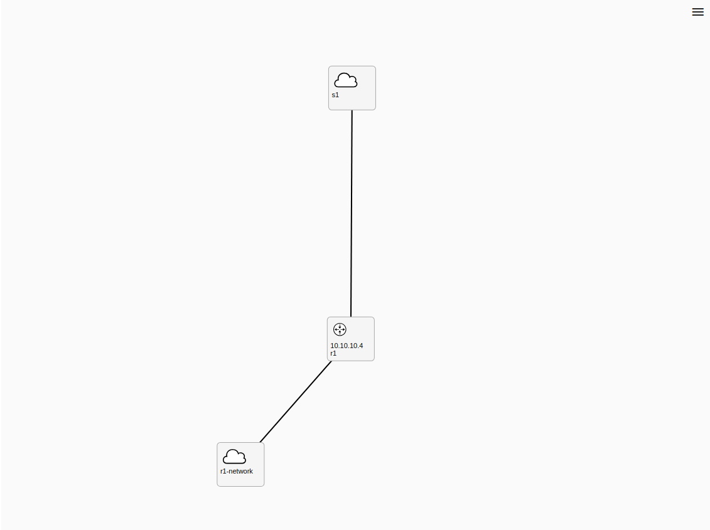

<div class="container">
  <div class="content">
    <div class="left-panel">
      <div class="level-content">
        <markdown [data]="phase.currentTask.content"></markdown>
      </div>
      <div *ngIf="displayedSolutionContent$ | async as solutionContent" class="solution-content">
        <h2> <span class="solution-color"> Solution: </span> </h2>
        <markdown
          [data]="solutionContent"
        >
        </markdown>
      </div>
    </div>
    <div class="right-panel" #rightPanel>
      <!-- TOPOLOGY COMPONENT-->
      <kypo2-topology-graph
        *ngIf="!isTopologyDisplayed; else topologyPlaceholder"
        [width]="topologyWidth"
        [height]="topologyHeight"
        [sandboxId]="sandboxId"
        [style.width.px]="topologyWidth"
        [style.height.px]="topologyHeight"
      >
      </kypo2-topology-graph>

      <div class="game-control-panel">
        <div class="game-control-bar">
          <!-- SOLUTION BUTTON-->
          <button
            mat-raised-button
            color="warn"
            [disabled]="
              (isSolutionRevealed$ | async) ||
              (isCorrectAnswerSubmitted$ | async) ||
              (isLoading$ | async)
            "
            (click)="revealSolution()"
            matTooltip="Display solution"
          >
            Solution
          </button>

          <div class="spacer"></div>
          <div class="answer-input">
            <!-- ANSWER field-->
            <form autocomplete="off">
              <mat-form-field
                appearance="outline"
                (keydown.enter)="$event.preventDefault()"
              >
                <mat-label>Answer</mat-label>
                <input
                  matInput
                  placeholder="Answer"
                  autocomplete="off"
                  (keydown)="keyboardSubmitAnswer($event)"
                  [disabled]="isCorrectAnswerSubmitted$ | async"
                  [(ngModel)]="answer"
                  [ngModelOptions]="{ standalone: true }"
                />
                <button
                  *ngIf="answer"
                  mat-button
                  matSuffix
                  mat-icon-button
                  aria-label="Clear"
                  [disabled]="isCorrectAnswerSubmitted$ | async"
                  (click)="answer = ''"
                >
                  <mat-icon>close</mat-icon>
                </button>
              </mat-form-field>
            </form>
            <button
              mat-button
              color="accent"
              [disabled]="!answer || (isCorrectAnswerSubmitted$ | async) || calculating"
              (click)="submitAnswer()"
            >
              Submit
            </button>
          </div>
        </div>

        <!-- GET SSH ACCESS BUTTON-->
        <button
          mat-raised-button
          color="primary"
          [disabled]="(isLoading$ | async) ||
                        (isCorrectAnswerSubmitted$ | async)
            "
          (click)="download()"
          matTooltip="Download config for SSH client"
        >
          Get SSH Config
        </button>


      </div>
    </div>
  </div>
  <div *ngIf="isCorrectAnswerSubmitted$ | async" class="footer">
    <kypo-next-phase-button [isLast]="isLast" (next)="onNext()">
    </kypo-next-phase-button>
  </div>
</div>

<ng-template #topologyPlaceholder>
  <div
    class="topology-placeholder"
    [style.width.px]="topologyWidth"
    [style.height.px]="topologyHeight"
  >
    <h3>There should be topology component</h3>
    
  </div>
</ng-template>
